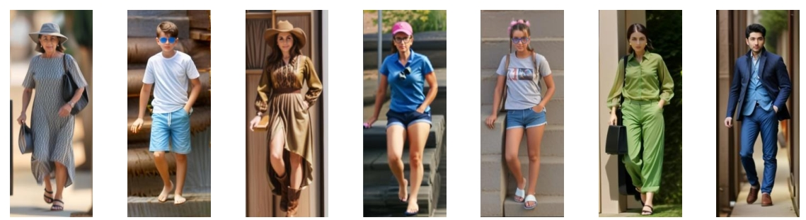
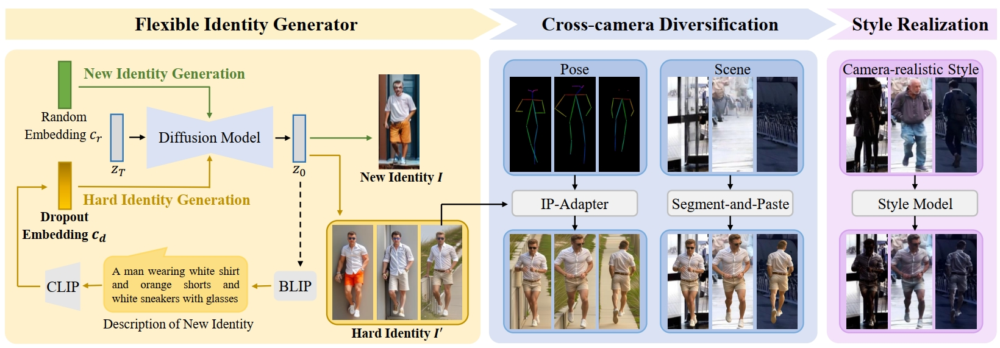

Data Examples
Our pipeline can generate diverse virtual identities (random identities and hard identities), and intra-ID groups with rich variations.
Random Identities
Hard Identities

Xiao-Wen Zhang*¹,³ Delong Zhang*¹,³ Zhi Ouyang¹,³ Jingke Meng¹,³ Yi-Xing Peng¹,³ Wei-Shi Zheng¹,²,³†
1 Sun Yat-sen University, China
2 Peng Cheng Laboratory, Shenzhen, China
3 Key Laboratory of Machine Intelligence and Advanced Computing, Ministry of Education, China
* Equal contribution † Corresponding author
Person re-identification (ReID) is to match the person images under different camera views. Training ReID models necessitates a substantial amount of labeled real-world data, leading to high labeling costs and privacy issues. Although several ReID data synthetic methods are proposed to address these issues, they fail to generate images with new identities or real-world camera styles. In this paper, we propose a novel pedestrian generation pipeline, VIPerson, to generate camera-realistic pedestrian images with flexible Virtual Identities for the Person ReID task. VIPerson focuses on three key factors in data synthesis: (I) Virtual identity diversity: Enhancing the latent diffusion model with our proposed dropout text embedding, we flexibly generate random and hard identities. (II) Scalable cross-camera variations: VIPerson introduces scalable variations of scenes and poses within each identity. (III) Camera-realistic style: Adopting an identity-agnostic approach to transfer realistic styles, we avoid privacy exposure of real identities. Extensive experimental results across a broad range of downstream ReID tasks demonstrate the superiority of our generated dataset over existing methods. In addition, VIPerson can be adapted to the privacy-constrained ReID scenario, which widens the application of our pipeline.
Our pipeline can generate diverse virtual identities (random identities and hard identities), and intra-ID groups with rich variations.
We validate our VIPerson dataset on a wide range of downstream ReID tasks, including direct transfer, supervised fine-tuning, and unsupervised domain adaptation. Our generated data consistently outperforms existing synthetic datasets and even real-data baselines in some scenarios, demonstrating its effectiveness and generalization capability.

The figure below illustrates our ablation study on the key components (including poses, scenes, styles) of ReID data synthesis. The results clearly show that removing any single component, such as pose variation or scene variation , leads to a significant drop in performance on both MSMT17 and Market1501 datasets. The combination of all three factors ('PV+SV+SR') achieves the highest rank-1 accuracy, which validates that all three components are essential and contribute synergistically to the effectiveness of our generated dataset.
The experimental results show that as the number of identities increases, the model's performance improves, demonstrating that our flexible identity generator (FIG) can generate scalable identities with diverse information. Furthermore, including hard identities allows the ReID model to learn more fine-grained discriminative features, thus improving its ability to distinguish between similar individuals.

As the scale of our intra-ID groups increases, performance on both datasets continues to improve. This is thanks to our proposed cross-camera diversification method, which introduces scalable and diverse poses and scenes without manual design, allowing us to expand the intra-ID group scale at a low cost for better performance.
If you have any questions, please feel free to comment in github or contact us: